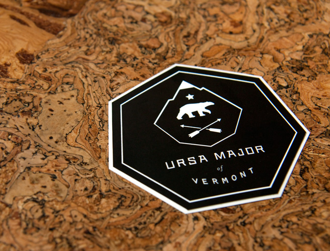

URSA MAJOR of Vermont
“We are Ursa Major, The Great Bear. We make stellar skincare products for men who live.” Austin based design studio PTARMAK created this fantastic identity package for the new men’s skin care line URSA MAJOR. I’m always a sucker for natural textures and simple overlays.
Found on Graphic Exchange